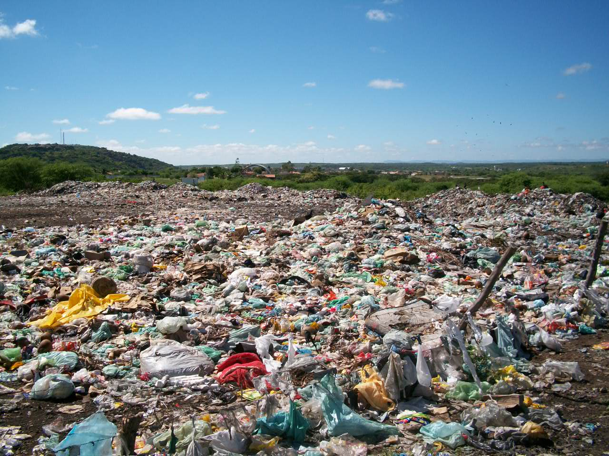
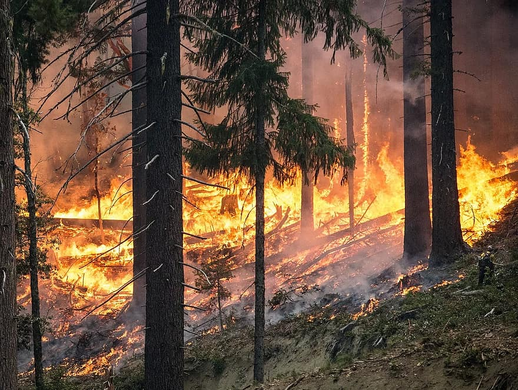

Lixões
Os lixões causam a contaminação das águas subterrâneas com a penetração do chorume no solo, mau cheiro e aumento do número de doenças, além disso atraem animais e vetores de doenças, além de contribuem para o aumento do número de incêndios causados pelos gases que são gerados a partir da decomposição dos resíduos depositados nos lixões.
Queimadas
As queimadas por sua vez, destroem o ecossistema local, provocam a morte de animais, eliminam exemplares da fauna local e trazem grandes prejuízos para a biodiversidade, além de outros impactos ambientais. Existem regiões que sofrem constantemente com as queimadas, e que todos os anos causam danos inimagináveis.
Desertificação

A desertificação é outro fator decorrente da destruição da vegetação nativa de um local, esse processo pode ser entendido como a destruição do potencial produtivo da terra através de atividades humanas agindo sobre ecossistemas frágeis, com baixa capacidade de regeneração. Em geral, a desertificação ocorre em zonas áridas, semiáridas e subúmidas secas.